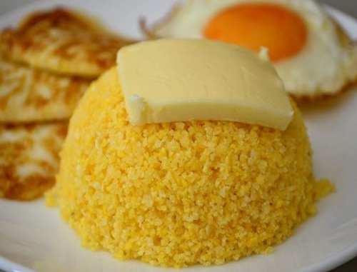
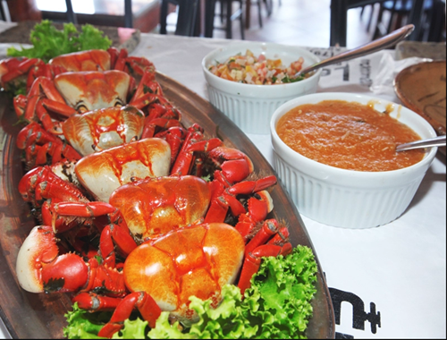

Região Nordeste
Historia
A culinária nordestina foi formada através da influência das culinárias portuguesa, indígena e africana. A
mistura de sabores e temperos foi sendo, gradualmente, formada durante o período colonial. Os pratos da culinária
da região Nordeste caracterizam-se pela presença marcante de temperos fortes e apimentados
Cuscuz

- O cuscuz é um prato de origem africana que é muito consumido no nordeste e na região norte do país. Ele pode
ser feito à base de farinha ou polvilho, milho, arroz ou mandioca. No nordeste é comumente consumido nas três
principais refeições do dia, podendo ser o prato principal do café da manhã e jantar. A preferência é ir
acompanhado de manteiga, leite, ovos ou carne de charque
Baião de Dois

- O baião de dois é um prato feito de arroz, feijão, carne seca e queijo coalho. Há quem
diga que a origem do nome é pela dança típica nordestina, o baião. Ele também ganhou popularidade com a música
“Baião de Dois”, em parceria com o compositor cearense Humberto Teixeira e o pernambucano Luiz Gonzaga, o rei do
baião!
Acarajé

- O acarajé tem origem africana e é um bolinho frito no azeite de dendê, feito com feijão fradinho, sal, alho,
gengibre, cebola e recheado com camarão. É muito consumido no estado da Bahia! Se por lá te perguntarem se você
prefere “quente ou frio” na verdade é referente ao nível de pimenta. Quanto mais “quente” mais apimentado será o
seu acarajé.
Carne de Sol

- A carne de sol é muito típica do nordeste brasileiro, e também é chamada de carne de vento e carne do sertão.
Apesar do nome, não há exposição aos raios solares. O que acontece na verdade é que antigamente ela era
ligeiramente salgada e colocada para secar ao sol. Essa técnica foi aprimorada e hoje em dia ela é seca em local
coberto e ventilado.
A tradição pede que a carne de sol seja assada e servida com queijo coalho.
Caranguejo

- O caranguejo é muito famoso no Ceará, tendo até um dia especial para o consumo: a quinta-feira. Ele pode ser
servido sozinho ou acompanhado por siri, camarão, ostras e outros frutos do mar. As vezes vai também com arroz,
palmito, leite de coco, farofa e outras combinações. No Maranhão, o caranguejo costuma ser servido com molhos à
base de tomate ou coco
Buchada de Bode

- No nordeste, a buchada é feito com as entranhas do bode, no caso rins, fígado e vísceras brancas (tripas).
Elas são lavadas, fervidas, cortadas, temperadas e cozidas em bolsas que geralmente são feitas com o próprio
estômago do animal. Recebe este nome porque supostamente é feita de bode. Ainda assim, é possível encontrar
buchadas preparadas com vísceras de carneiro ou até mesmo boi.